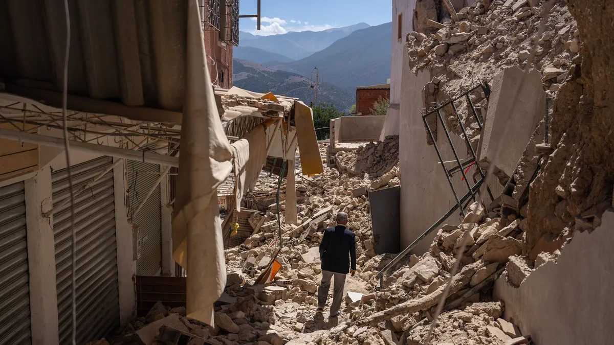
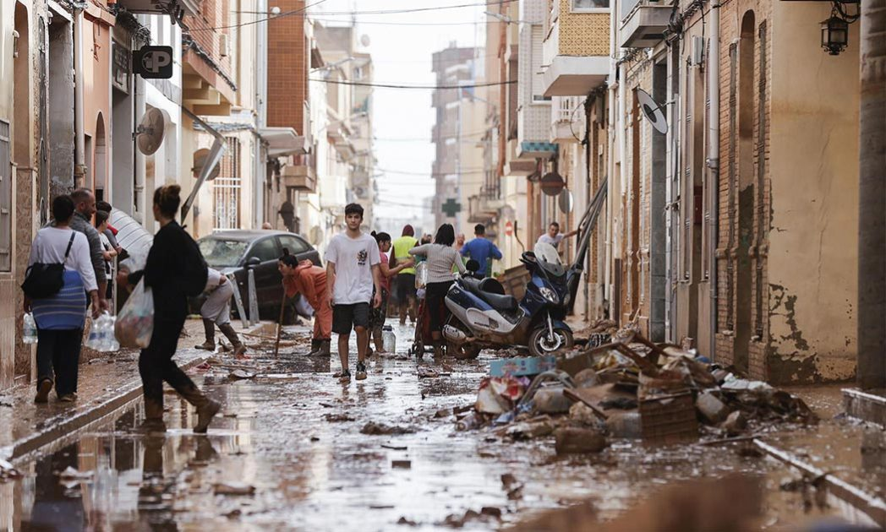

EMERGENCIA
DANA Valencia
Atendemos a las personas por las graves inundaciones de noviembre
Catástrofes Emergentes



Zonas Afectadas por la DANA y Recursos de Ayuda en Valencia
La DANA (Depresión Aislada en Niveles Altos) es un fenómeno meteorológico que puede provocar lluvias torrenciales, fuertes vientos e inundaciones, afectando gravemente a diversas zonas. En situaciones como estas, el Gobierno, las autoridades locales y varias organizaciones ofrecen asistencia para ayudar a las personas afectadas.